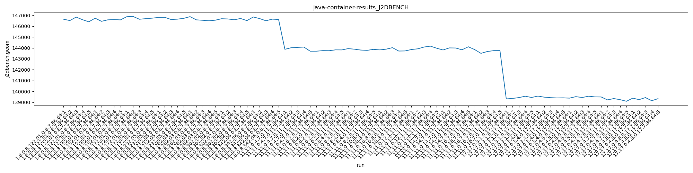
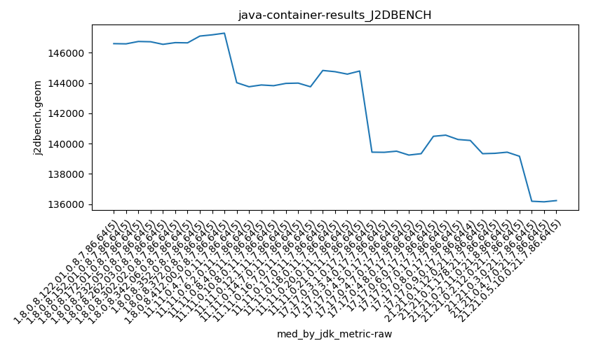
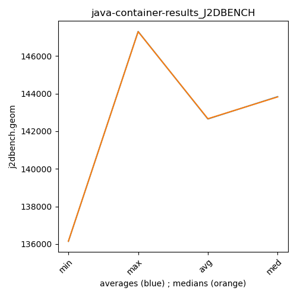

java- J2DBENCH
Context at bottom
/home/jvanek/git/benchmarks-in-nested-virtualisation-toolchain/final_results/container_results/container-results_J2DBENCH
java-
J2DBENCH
container-results_J2DBENCH
final score
Expected number of java- JDKs: 37
1st avgmed_alljdks_metric:
/home/jvanek/git/benchmarks-in-nested-virtualisation-toolchain/final_results/result_processing.py /home/jvanek/git/benchmarks-in-nested-virtualisation-toolchain/final_results/container_results/container-results_J2DBENCH j2dbench.geom False
values: [146645, 146518, 146838, 146597, 146406, 146736, 146448, 146584, 146608, 146581, 146873, 146895, 146639, 146692, 146740, 146801, 146816, 146617, 146647, 146722, 146879, 146583, 146544, 146500, 146552, 146687, 146664, 146593, 146709, 146513, 146848, 146701, 146500, 146650, 146619, 147641, 147268, 147004, 147097, 146936, 147129, 146852, 147302, 147179, 147339, 147216, 147246, 147321, 147424, 147289, 143873, 144020, 144051, 144079, 143700, 143701, 143752, 143745, 143823, 143818, 143937, 143884, 143804, 143777, 143869, 143821, 143884, 144025, 143714, 143724, 143854, 143917, 144082, 144166, 143973, 143812, 144002, 143992, 143830, 144106, 143849, 143502, 143670, 143751, 143754, 144826, 144740, 144805, 144864, 144920, 144747, 144502, 144830, 144640, 144745, 144476, 144485, 144653, 144741, 144585, 144583, 144824, 144684, 144790, 144819, 139309, 139355, 139432, 139557, 139442, 139569, 139472, 139423, 139400, 139408, 139383, 139518, 139440, 139556, 139497, 139491, 139220, 139342, 139241, 139093, 139380, 139243, 139432, 139147, 139333, 140480, 140361, 140513, 140911, 140343, 140414, 140556, 140571, 140560, 140426, 140335, 140385, 140269, 140188, 139988, 140206, 140560, 139399, 139385, 139398, 139477, 139148, 139301, 139333, 139356, 139397, 139423, 139339, 139115, 139412, 139391, 139532, 139431, 139432, 139432, 139405, 139163, 138978, 139036, 136331, 136001, 136052, 136250, 136192, 136161, 135915, 135969, 136527, 136154, 136236, 136304, 136073, 136362, 136197]

Expected number of iterations: 5
final number of values: 184 out of 185
Pass rate: 99.5%
values: (135915, 147641, 142665.5652173913, 143818)

** accuracy from all jdks and runs
more is better
MIN: 135915
MAX: 147641
AVG: 142665.5652173913
MED: 143818
Relative differences 1:
MIN-MAX: 8.0 %
MIN-AVG: 5.0 %
MIN-MED: 5.0 %
MAX-MIN: -9.0 %
MAX-AVG: -3.0 %
MAX-MED: -3.0 %
AVG-MED: 1.0 %
stored to java-.properties. sort | uniq that!
2nd avgmed_by_jdk_metric:
values: [146600.8, 146591.4, 146767.8, 146720.6, 146611.6, 146633.2, 146663.6, 147189.2, 147160.2, 147299.2, 143944.6, 143767.8, 143854.2, 143833.6, 143998.4, 143948.4, 143705.2, 144831.0, 144692.8, 144588.0, 144740.0, 139419.0, 139454.4, 139478.8, 139277.4, 139307.0, 140521.6, 140505.4, 140233.0, 139887.5, 139331.4, 139326.0, 139439.6, 139202.8, 136165.2, 136145.2, 136234.4]

values: [146597, 146584, 146740, 146722, 146552, 146664, 146650, 147097, 147179, 147289, 144020, 143752, 143869, 143821, 143973, 143992, 143751, 144826, 144745, 144585, 144790, 139432, 139423, 139497, 139241, 139333, 140480, 140556, 140269, 140206, 139333, 139356, 139431, 139163, 136192, 136154, 136236]

values: (136145.2, 147299.2, 142650.54864864863, 143833.6)
values: (136154, 147289, 142662.16216216216, 143821)

** accuracy from all jdks where runs were avged
more is better
MIN: 136145.2
MAX: 147299.2
AVG: 142650.54864864863
MED: 143833.6
Relative differences 1:
MIN-MAX: 8.0 %
MIN-AVG: 5.0 %
MIN-MED: 5.0 %
MAX-MIN: -8.0 %
MAX-AVG: -3.0 %
MAX-MED: -2.0 %
AVG-MED: 1.0 %
stored to java-.properties. sort | uniq that!
** accuracy from all jdks where runs were medianed
more is better
MIN: 136154
MAX: 147289
AVG: 142662.16216216216
MED: 143821
Relative differences 1:
MIN-MAX: 8.0 %
MIN-AVG: 5.0 %
MIN-MED: 5.0 %
MAX-MIN: -8.0 %
MAX-AVG: -3.0 %
MAX-MED: -2.0 %
AVG-MED: 1.0 %
stored to java-.properties. sort | uniq that!
/home/jvanek/git/benchmarks-in-nested-virtualisation-toolchain/final_results/container_results/container-results_RADARGUNs3
java-
J2DBENCH
/home/jvanek/git/benchmarks-in-nested-virtualisation-toolchain/final_results/container_results/container-results_RADARGUNs1
java-
J2DBENCH
/home/jvanek/git/benchmarks-in-nested-virtualisation-toolchain/final_results/container_results/container-results_DACAPO
java-
J2DBENCH
/home/jvanek/git/benchmarks-in-nested-virtualisation-toolchain/final_results/container_results/container-results_SPECJBB
java-
J2DBENCH
/home/jvanek/git/benchmarks-in-nested-virtualisation-toolchain/final_results/container_results/container-results_JMH
java-
J2DBENCH
pass rates:
container-results_J2DBENCH=99.5%
Context:
- container_results
- J2DBENCH